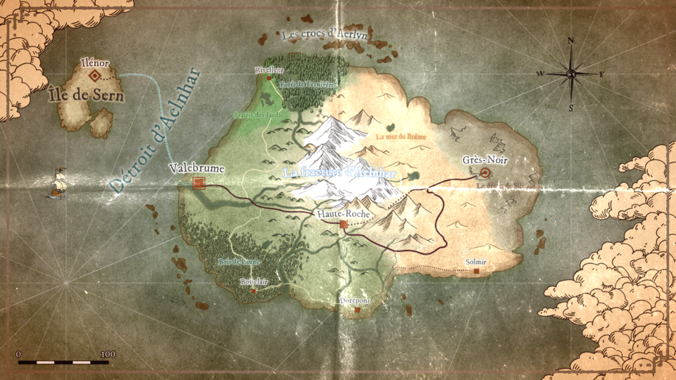
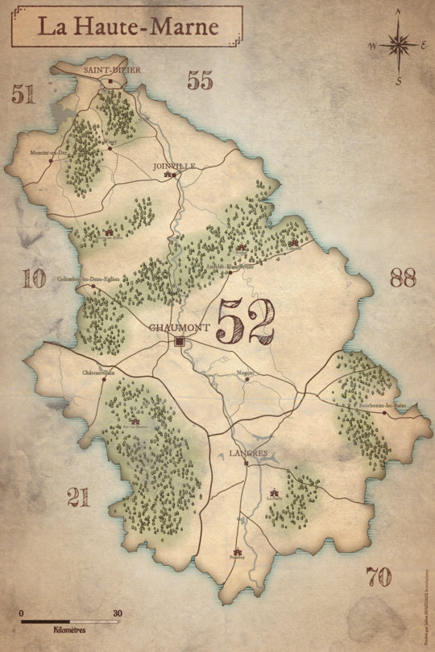

Productions cartographiques — Wonderdraft
Toutes les cartes présentées ci-dessous ont été réalisées sous Wonderdraft, uniquement par curiosité
et par envie d’expérimenter.
Aucune retouche n’a été effectuée sur un logiciel externe.
Pour consulter les cartes en bonne qualité, il suffit de cliquer dessus.
Ma première carte sur Wonderdraft
Cette carte a été produite sur Wonderdraft.
Je voulais essayé de faire une île avec en découvrant le logiciel.

La Haute-Marne dans un style ancien
Cette carte a été produite sur Wonderdraft.
Je voulais faire une carte de mon département avec un style ancien (ça rend BEAUCOUP mieux en papier).
